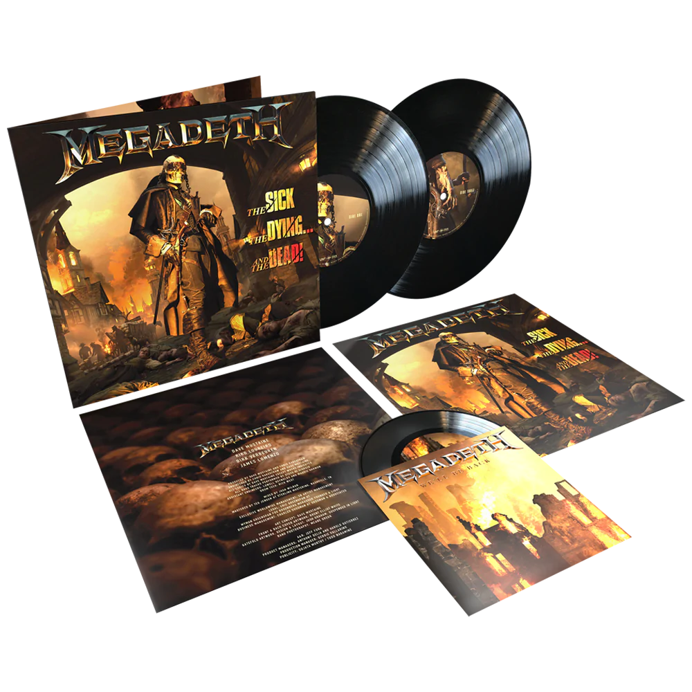

ORDER NOW
These items are currently on pre-order and will begin shipping in in conjunction with the Album Street Date, September 2. All other items purchased with this item will be held until that time. Items will not ship separately.

THE SICK, THE DYING ... AND THE DEAD LIMITED EDITION 2LP + 7 INCH
This limited & numbered webstore 2LP edition is pressed on 180-gram vinyl, features an exclusive 7-inch with “We’ll Be Back” and an unreleased live performance of “The Conjuring” from 2021, and an exclusive lenticular litho.
THE SICK, THE DYING ... AND THE DEAD 2LP VINYL
Megadeth’s explosive new album The Sick, The Dead... And the Dying featuring twelve new songs from the titans of thrash metal! This 2LP edition is pressed on 180-gram vinyl.
THE SICK, THE DYING ... AND THE DEAD CD
Produced by Dave Mustaine and Chris Rakestraw, the follow-up to the critically acclaimed, Grammy® award winning album Dystopia will melt Megadeth fans’ minds worldwide with songs like “We’ll Be Back,” the new radio hit “Soldier On!” and “Night Stalkers” – the latter of which features icon Ice T.
THE SICK, THE DYING ... AND THE DEAD LIMITED EDITION 2LP + 7 INCH
This limited & numbered webstore 2LP edition is pressed on 180-gram vinyl, features an exclusive 7-inch with “We’ll Be Back” and an unreleased live performance of “The Conjuring” from 2021, and an exclusive lenticular litho.
THE SICK, THE DYING ... AND THE DEAD 2LP VINYL
Megadeth’s explosive new album The Sick, The Dead... And the Dying featuring twelve new songs from the titans of thrash metal! This 2LP edition is pressed on 180-gram vinyl.
THE SICK, THE DYING ... AND THE DEAD CD
Produced by Dave Mustaine and Chris Rakestraw, the follow-up to the critically acclaimed, Grammy® award winning album Dystopia will melt Megadeth fans’ minds worldwide with songs like “We’ll Be Back,” the new radio hit “Soldier On!” and “Night Stalkers” – the latter of which features icon Ice T.

NEW ALBUM OUT NOW
- The Sick, The Dying… And The Dead!
- Life In Hell
- Night Stalkers
- Dogs Of Chernobyl
- Sacrifice
- Junkie
- Psychopathy
- Killing Time
- Soldier On!
- Célebutante
- Mission To Mars
- We’ll Be Back
ORDER NOW
These items are currently on pre-order and will begin shipping in in conjunction with the Album Street Date, September 2. All other items purchased with this item will be held until that time. Items will not ship separately.
THE SICK, THE DYING ... AND THE DEAD LIMITED EDITION 2LP + 7 INCH
This limited & numbered webstore 2LP edition is pressed on 180-gram vinyl, features an exclusive 7-inch with “We’ll Be Back” and an unreleased live performance of “The Conjuring” from 2021, and an exclusive lenticular litho.
order now
THE SICK, THE DYING ... AND THE DEAD 2LP VINYL
Megadeth’s explosive new album The Sick, The Dead... And the Dying featuring twelve new songs from the titans of thrash metal! This 2LP edition is pressed on 180-gram vinyl.
order now
THE SICK, THE DYING ... AND THE DEAD CD
Produced by Dave Mustaine and Chris Rakestraw, the follow-up to the critically acclaimed, Grammy® award winning album Dystopia will melt Megadeth fans’ minds worldwide with songs like “We’ll Be Back,” the new radio hit “Soldier On!” and “Night Stalkers” - the latter of which features icon Ice T.
order now